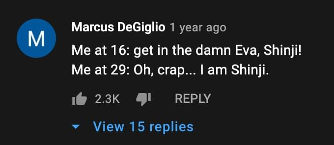
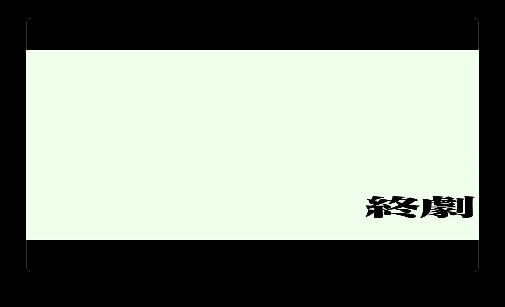

只要庵野秀明满足以及真嗣有一个 Happy Ending 就足够了
以上就是我对 EVA 终的一句话总结。
时代变了，庵野秀明也变了。EOE 里那个压抑的，令人自闭的结局，很难在这个时候展现了。
一方面，在《行家本色 特别篇》里，庵野秀明也坦诚现在不能像以前一样做一部过于晦涩难懂的动画了，庵野秀明想要让作品变得有趣。虽然他没有对 “有趣” （面白い）这个概念进一步阐释，但我觉得这里的 “有趣” 多少会让神秘感消失，让观众更加易懂。
另一方面，同样在这部纪录片里，庵野也多次提到要有创新，不想像以前那样。如果开始直接画分镜，那画出来也只是他能想到的。为了突破，他才为此在摄影棚里拍动捕。从这一点来说，庵野在刻意回避以前的创作习惯和手法，这必然会让再想看一次 EOE 的人失望。
再者，必须要考虑到庵野秀明自己的性格，尤其是他现在似乎已经与这个世界和解了。当初做 TV 版和 EOE 的那个庵野，是一个抑郁的，受到死亡威胁的，暴躁到会踹文件柜的，甚至想要自杀的，极度压抑的庵野。很大程度上，他当时的境况影响了他当时的创作方向。现在的庵野，是开了个公司，有了自己喜欢的人，可以拍自己喜欢的特摄（新哥斯拉，新奥特曼）的庵野了，估计他很难回到 20 多年前的那个状态去创作 EOE 那样的故事了。
所以，在看这部作品前，我最不希望看到的，是一部和 EOE 很像的作品。
我希望看到的，是真嗣和这个世界达成和解。其实不只是希望真嗣，也希望创作了 EVA 的庵野秀明，更重要地，是希望在观看这部作品的我自己与这个无意义的世界达成和解。所以，这就是我的期望，至于他们是怎么达成和解的，我其实并不在乎。在看作品前，我想过如果结局即使像 TV 结尾的那段想象一样，所有人都过上了普通高中生的生活，这也足够了。至于真嗣最后和谁走在一起，只要真嗣快乐就够了。就算庵野安排的结局里，真嗣没有和谁走在一起，而是和一群朋友高高兴兴的上学，对我来说，那么足够了。和前面的故事相比，真嗣已经经历了太多痛苦，而这些痛苦，使得普通平凡的生活，看起来都是那么幸福。
https://youtu.be/USKzAj1dOq4 下的一条评论
这部作品完美吗？当然不完美，初号机和 13 号机的战斗时的动作就显得有点僵硬不自然；对于玛丽的身世，尤其是为什么是背信者，也没有展开说明，显然还有很多坑没有填。
达到了他们自己在纪录片透露的期望了吗？见仁见智。意识流的那一段，尤其是碇源堂的独白，是故意这么表现的吗，这段太有 TV 和旧剧场版的味道，反而不是我想看到的 “新” 的表现形式和内容。但 Q 和 终本身，将时间线调整至 14 年后，本身就是他们对创新的探索了。纪录片提到的通过动捕寻找分镜，也是制作组努力寻找创新的铁证。这个问题似乎也只有制作组能回答，但作为观众的我，至少认可和倾佩他们这么多年来对创作的努力。
这部作品能够上映，我就很欣慰了。我至今还沉浸在这 “终剧” 所带来的仪式感。
EVA 结束了，生活还要继续，“新世纪圈钱计划” 也会继续，期待庵野秀明所带领的 Khara 能为我们带来更多的优秀作品。

推荐观看和收听：